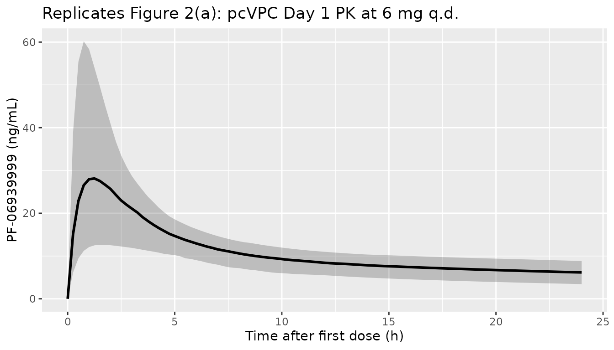
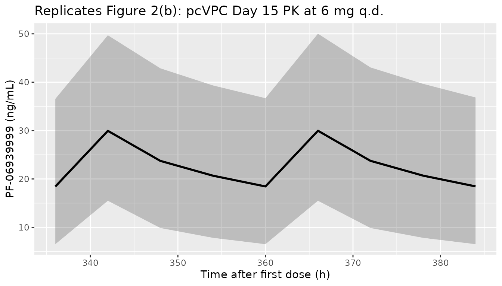
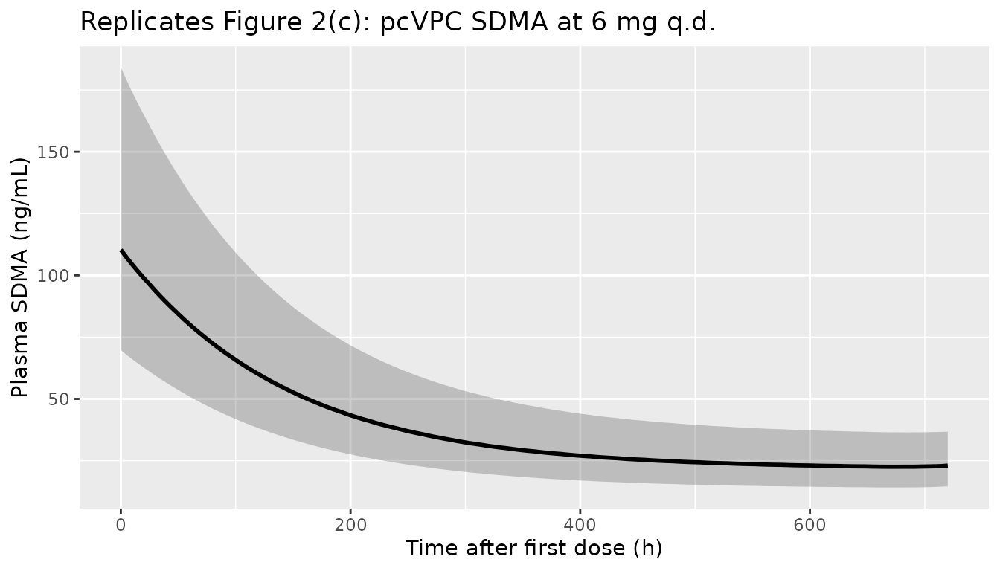
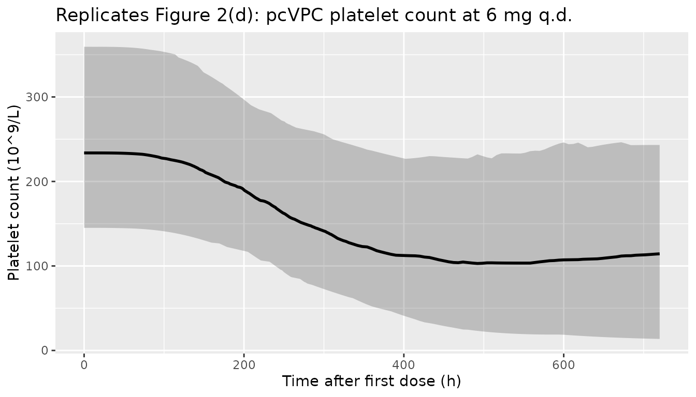
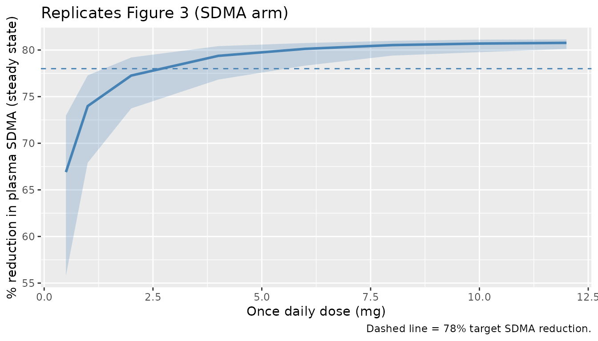
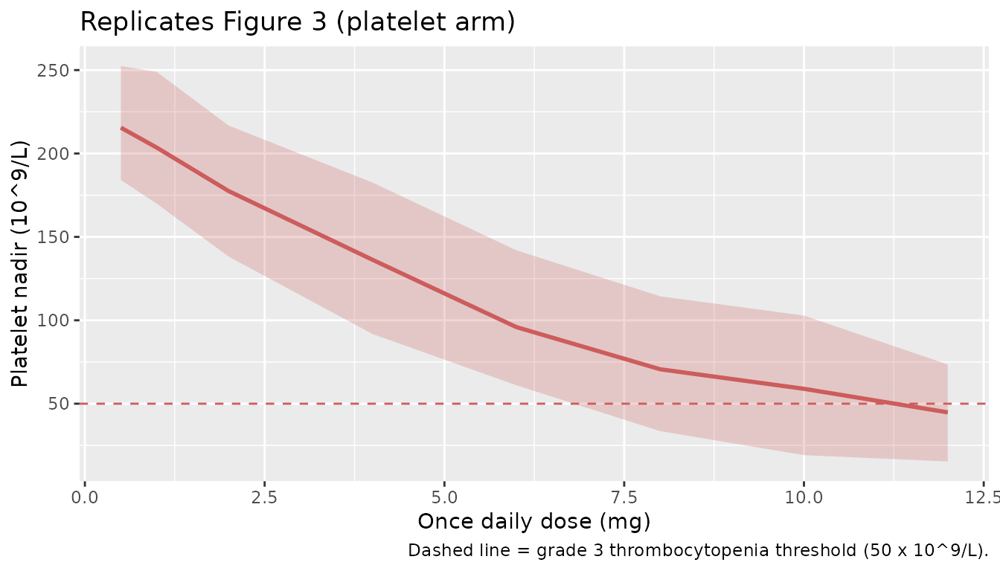

Model and source
- Citation: Guo C, Liao KH, Li M, Wang I-M, Shaik N, Yin D. PK/PD model-informed dose selection for oncology phase I expansion: Case study based on PF-06939999, a PRMT5 inhibitor. CPT Pharmacometrics Syst Pharmacol. 2023;12:1619-1625. doi:10.1002/psp4.12882.
- Description: Population PK/PD model for PF-06939999 (a small-molecule PRMT5 inhibitor) in 28 adults with advanced solid tumors enrolled in the dose-escalation part of NCT03854227. PK is a two-compartment model with first-order absorption (CL/F, V1/F, Q/F, V2/F, Ka). Plasma SDMA (the PD biomarker for PRMT5 inhibition) is modelled by an indirect-response model with saturable Imax inhibition on zero-order SDMA production (Kin/Kout), the log-transformed SDMA observation taking an additive (log-normal) residual error. Platelet count is described by the Friberg semi-mechanistic myelosuppression model (proliferating cells plus three transit compartments feeding a circulating compartment) with a linear drug effect Slope*Cc on the proliferation rate and feedback (Circ0/circ)^gamma.
- Article (open access): https://doi.org/10.1002/psp4.12882
PF-06939999 is an orally-available, small-molecule, SAM-competitive inhibitor of protein arginine methyltransferase 5 (PRMT5). The first-in-patient (FIP) study NCT03854227 was a Phase I dose-escalation in 28 adults with advanced solid tumors. The PK/PD analysis described by Guo et al. (2022) was used to support the recommended dose for expansion (RDE), which was selected as 6 mg once daily.
The structural model has three layers (Figure 1 of the source):
- PK – two-compartment model with first-order oral absorption (Ka, CL/F, V1/F, Q/F, V2/F).
- Plasma SDMA (PD biomarker) – indirect-response model with saturable Imax inhibition on the zero-order SDMA production rate Kin and first-order elimination Kout. Symmetrical dimethyl-arginine (SDMA) is a stable catabolic product of PRMT5 enzymatic activity used as a peripheral pharmacodynamic marker.
- Platelet count – the Friberg et al. (2002) semi-mechanistic myelosuppression model: a self-renewing proliferating compartment plus three transit compartments feeding the circulating compartment, with a linear Slope*Cc effect on the proliferation rate and feedback (Circ0/circ)^gamma.
Population
The PK/PD analysis pooled 28 patients with advanced or metastatic solid tumors who received PF-06939999 in Part 1 of NCT03854227. Doses were 0.5 mg q.d. (n = 1), 4 mg q.d. (n = 5), 6 mg q.d. (n = 6), or 8 mg q.d. (n = 3); or 0.5 mg b.i.d. (n = 1), 1 mg b.i.d. (n = 2), 2 mg b.i.d. (n = 3), 4 mg b.i.d. (n = 3), or 6 mg b.i.d. (n = 4) – 24 evaluable for dose-limiting toxicity. Two confirmed partial responses were observed (one each in the 2 mg b.i.d. and 4 mg b.i.d. cohorts). Four subjects experienced dose-limiting toxicities (thrombocytopenia n = 2 in 6 mg b.i.d.; anemia n = 1 in 8 mg q.d.; neutropenia n = 1 in 6 mg q.d.).
Baseline body weight, age, and hepatic function were tested as PK covariates and were not retained in the final model (drop in objective function value < 3.84; Results, page 1621). The full per-cohort baseline demographics are summarised in Appendix Table S1 of the source, which is not on disk in this worktree.
The population metadata can be inspected programmatically:
mod_meta$meta$population
#> $n_subjects
#> [1] 28
#>
#> $n_studies
#> [1] 1
#>
#> $age_range
#> [1] NA
#>
#> $weight_range
#> [1] NA
#>
#> $sex_female_pct
#> [1] NA
#>
#> $disease_state
#> [1] "Adults with advanced or metastatic solid tumors enrolled in the dose-escalation part (Part 1) of the first-in-patient study NCT03854227 of PF-06939999, a PRMT5 inhibitor. Two confirmed partial responses were observed (one each in the 2 mg b.i.d. and 4 mg b.i.d. cohorts). Four subjects experienced dose-limiting toxicities: thrombocytopenia (n = 2) in the 6 mg b.i.d. cohort, anemia (n = 1) in the 8 mg q.d. cohort, and neutropenia (n = 1) in the 6 mg q.d. cohort."
#>
#> $dose_range
#> [1] "Oral PF-06939999 once daily (q.d.) at 0.5 mg (n = 1), 4 mg (n = 5), 6 mg (n = 6), or 8 mg (n = 3); or twice daily (b.i.d.) at 0.5 mg (n = 1), 1 mg (n = 2), 2 mg (n = 3), 4 mg (n = 3), or 6 mg (n = 4). Recommended dose for expansion (RDE) selected from the simulations is 6 mg q.d."
#>
#> $regions
#> [1] NA
#>
#> $notes
#> [1] "Baseline body weight, age, and hepatic function were tested as PK covariates and were not retained in the final model (drop in objective function value < 3.84). Demographic detail (age, weight, sex, race) is summarised in Appendix Table S1, which is not on disk in this worktree; the population fields above therefore record disease state, dosing, and dose-limiting toxicities verbatim from the main text (Analysis Plan and Results). Trial registration: NCT03854227."Source trace
The per-parameter origin is recorded as an in-file comment next to
each ini() entry. Every numeric value below was taken from
Table 1 of Guo et al. (2022, “PF-06939999 PK and PD (SDMA and platelet
count) model parameters”, page 1623). The IIV %CV values from Table 1
were converted to log-scale variances via the exact log-normal
relationship omega^2 = log(1 + CV^2); the residual error variances were
converted to SDs via sqrt.
| Equation / parameter | Value | Source location |
|---|---|---|
lka (Ka) |
log(2.31) 1/h | Table 1, PK model row Ka |
lcl (CL/F) |
log(9.53) L/h | Table 1, PK model row CL/F |
lvc (V1/F) |
log(160) L | Table 1, PK model row V1/F |
lq (Q/F) |
log(26.2) L/h | Table 1, PK model row Q/F |
lvp (V2/F) |
log(285) L | Table 1, PK model row V2/F |
imax |
0.823 (unitless) | Table 1, SDMA PD row Imax |
lic50 (IC50) |
log(0.425) ng/mL | Table 1, SDMA PD row IC50 |
lkout (Kout) |
log(0.00708) 1/h | Table 1, SDMA PD row Kout |
lblsdma (Baseline) |
log(113) ng/mL | Table 1, SDMA PD row Baseline SDMA |
lmtt (MTT) |
log(134) h | Table 1, Platelet PD row MTT |
lslope (Slope) |
log(0.00496) per ng/mL | Table 1, Platelet PD row Slope |
lgamma (gamma) |
log(0.217) | Table 1, Platelet PD row Feedback |
lblplt (Baseline) |
log(232) 10^9/L | Table 1, Platelet PD row Baseline PLT |
etalcl |
log(1+0.389^2) = 0.141 | Table 1, IIV(%) for CL/F = 38.9% |
etalvc |
log(1+0.611^2) = 0.317 | Table 1, IIV(%) for V1/F = 61.1% |
etalblsdma |
log(1+0.291^2) = 0.0812 | Table 1, IIV(%) for Baseline SDMA = 29.1% |
etalslope |
log(1+0.522^2) = 0.241 | Table 1, IIV(%) for Slope = 52.2% |
etalgamma |
log(1+0.469^2) = 0.199 | Table 1, IIV(%) for Feedback = 46.9% |
etalblplt |
log(1+0.283^2) = 0.0771 | Table 1, IIV(%) for Baseline PLT = 28.3% |
propSd |
sqrt(0.112) = 0.335 | Table 1, PK residual error |
propSd_SDMA |
sqrt(0.0146) = 0.121 | Table 1, SDMA residual error |
propSd_PLT |
sqrt(0.0235) = 0.153 | Table 1, PLT residual error |
| 2-cmt PK ODEs | n/a | Figure 1, PK for PF-06939999 |
| Indirect-response Imax/IC50 on Kin | n/a | Figure 1, PK/PD for plasma SDMA |
| Friberg 4-stage chain w/ Slope*Cc + (Circ0/circ)^gamma | n/a | Figure 1, PK/PD for platelet (cites Friberg 2002) |
Virtual cohort
The Guo 2022 patient-level data are not publicly available. The simulations below construct virtual cohorts at q.d. dose levels covering the observed FIP escalation range (0.5, 1, 2, 4, 6, 8, 10, 12 mg/day) so that we can reproduce both the pcVPC-style trajectories at the RDE (Figure 2) and the steady-state dose-response sweep (Figure 3) of the source paper.
set.seed(20221210)
n_per_dose <- 200L
dose_levels <- c(0.5, 1, 2, 4, 6, 8, 10, 12)
n_doses <- length(dose_levels)
# Dose interval and follow-up
tau <- 24 # h, q.d.
n_dose_days <- 28L # 28 daily doses
follow_up_h <- 24 * 30 # 30 days observation window
obs_grid <- sort(unique(c(
seq(0, 24, by = 0.25), # dense day-1 sampling
seq(24, 24 * 14, by = 1), # daily sampling through day 14
seq(24 * 14, follow_up_h, by = 6) # sparser to day 30 to keep render time low
)))
# Helper: build one cohort as a self-contained event table.
make_cohort <- function(n, dose_mg, id_offset = 0L) {
ids <- id_offset + seq_len(n)
# Multi-dose event table per subject -- q.d. dosing for n_dose_days
ev_dose <- expand.grid(
id = ids,
time = seq(0, by = tau, length.out = n_dose_days)
)
ev_dose$evid <- 1L
ev_dose$amt <- dose_mg
ev_dose$cmt <- "depot"
# Observation rows on three outputs (Cc, SDMA, PLT)
ev_obs_Cc <- expand.grid(id = ids, time = obs_grid)
ev_obs_Cc$evid <- 0L; ev_obs_Cc$amt <- 0; ev_obs_Cc$cmt <- "Cc"
ev_obs_SD <- expand.grid(id = ids, time = obs_grid)
ev_obs_SD$evid <- 0L; ev_obs_SD$amt <- 0; ev_obs_SD$cmt <- "SDMA"
ev_obs_PLT <- expand.grid(id = ids, time = obs_grid)
ev_obs_PLT$evid <- 0L; ev_obs_PLT$amt <- 0; ev_obs_PLT$cmt <- "PLT"
out <- dplyr::bind_rows(ev_dose, ev_obs_Cc, ev_obs_SD, ev_obs_PLT)
out$treatment <- sprintf("%g mg q.d.", dose_mg)
out$dose_mg <- dose_mg
out
}
# Build all cohorts with disjoint id ranges
events <- dplyr::bind_rows(lapply(seq_along(dose_levels), function(i) {
make_cohort(
n = n_per_dose,
dose_mg = dose_levels[i],
id_offset = (i - 1L) * n_per_dose
)
}))
stopifnot(!anyDuplicated(unique(events[, c("id", "time", "evid")])))
nrow(events); length(unique(events$id))
#> [1] 2315200
#> [1] 1600Simulation
mod <- mod_meta
sim <- rxode2::rxSolve(
mod,
events = events,
keep = c("treatment", "dose_mg")
) |>
as.data.frame()
sim_obs <- sim |> dplyr::filter(time <= follow_up_h)
dim(sim_obs)
#> [1] 2270400 36
unique(sim_obs$treatment)
#> [1] "0.5 mg q.d." "1 mg q.d." "2 mg q.d." "4 mg q.d." "6 mg q.d."
#> [6] "8 mg q.d." "10 mg q.d." "12 mg q.d."For typical-value reproductions of Figure 2 (pcVPC central tendency at the RDE), we also generate a deterministic prediction with random effects zeroed out.
mod_typical <- mod |> rxode2::zeroRe()
rde_first_id <- min(events$id[events$treatment == "6 mg q.d."])
sim_typical <- rxode2::rxSolve(
mod_typical,
events = events |> dplyr::filter(treatment == "6 mg q.d.", id == rde_first_id)
) |>
as.data.frame()
#> ℹ omega/sigma items treated as zero: 'etalcl', 'etalvc', 'etalblsdma', 'etalslope', 'etalgamma', 'etalblplt'Replicate published figures
Figure 2 – pcVPC of PK, SDMA, and platelet count at the RDE (6 mg q.d.)
The source Figure 2 panels (a, b, c, d) display pcVPCs across all dose levels (median + 5th / 95th percentiles of the simulated distribution). Below we plot the simulated central tendency at the RDE (6 mg q.d.) for each output as a qualitative replication of those panels; absolute peaks differ from the pooled-cohort observed scatter because the source pcVPC was prediction-and- variance-corrected over the heterogeneous dose-escalation cohort.
sim_rde <- sim_obs |> dplyr::filter(treatment == "6 mg q.d.")
quants <- sim_rde |>
dplyr::group_by(time) |>
dplyr::summarise(
Cc05 = stats::quantile(Cc, 0.05, na.rm = TRUE),
Cc50 = stats::quantile(Cc, 0.50, na.rm = TRUE),
Cc95 = stats::quantile(Cc, 0.95, na.rm = TRUE),
SD05 = stats::quantile(SDMA, 0.05, na.rm = TRUE),
SD50 = stats::quantile(SDMA, 0.50, na.rm = TRUE),
SD95 = stats::quantile(SDMA, 0.95, na.rm = TRUE),
PL05 = stats::quantile(PLT, 0.05, na.rm = TRUE),
PL50 = stats::quantile(PLT, 0.50, na.rm = TRUE),
PL95 = stats::quantile(PLT, 0.95, na.rm = TRUE),
.groups = "drop"
)
# Panel (a) -- PK profile on cycle 1 day 1
ggplot(quants |> dplyr::filter(time <= 24), aes(time, Cc50)) +
geom_ribbon(aes(ymin = Cc05, ymax = Cc95), alpha = 0.25) +
geom_line(linewidth = 1) +
labs(x = "Time after first dose (h)", y = "PF-06939999 (ng/mL)",
title = "Replicates Figure 2(a): pcVPC Day 1 PK at 6 mg q.d.")
# Panel (b) -- PK profile on cycle 1 day 15 (around steady state)
ggplot(quants |> dplyr::filter(time >= 24 * 14, time <= 24 * 15 + 24), aes(time, Cc50)) +
geom_ribbon(aes(ymin = Cc05, ymax = Cc95), alpha = 0.25) +
geom_line(linewidth = 1) +
labs(x = "Time after first dose (h)", y = "PF-06939999 (ng/mL)",
title = "Replicates Figure 2(b): pcVPC Day 15 PK at 6 mg q.d.")
# Panel (c) -- SDMA time course
ggplot(quants, aes(time, SD50)) +
geom_ribbon(aes(ymin = SD05, ymax = SD95), alpha = 0.25) +
geom_line(linewidth = 1) +
labs(x = "Time after first dose (h)", y = "Plasma SDMA (ng/mL)",
title = "Replicates Figure 2(c): pcVPC SDMA at 6 mg q.d.")
# Panel (d) -- Platelet time course
ggplot(quants, aes(time, PL50)) +
geom_ribbon(aes(ymin = PL05, ymax = PL95), alpha = 0.25) +
geom_line(linewidth = 1) +
labs(x = "Time after first dose (h)", y = "Platelet count (10^9/L)",
title = "Replicates Figure 2(d): pcVPC platelet count at 6 mg q.d.")
Figure 3 – Steady-state SDMA reduction and platelet nadir vs daily dose
Source Figure 3 plots, for q.d. doses up to ~12 mg, the simulated steady-state percentage SDMA reduction from baseline (median + 90% PI) and the platelet nadir at steady state (median + 50% PI). Two horizontal references are drawn: the target 78% SDMA reduction (PD) and the grade 3 thrombocytopenia threshold of 50 x 10^9/L (safety). The accompanying table reports the simulation-derived probability of (i) achieving the target PD and (ii) developing grade >=3 thrombocytopenia at 4, 6, and 8 mg q.d.
# Steady-state SDMA reduction (use last dosing interval as a proxy)
ss_window <- c(24 * (n_dose_days - 1), 24 * n_dose_days)
nadir_window <- c(0, 24 * n_dose_days) # nadir over the full treatment course
ss_sdma <- sim_obs |>
dplyr::filter(time >= ss_window[1], time <= ss_window[2]) |>
dplyr::group_by(id, treatment, dose_mg) |>
dplyr::summarise(
sdma_avg = mean(SDMA, na.rm = TRUE),
.groups = "drop"
)
# Per-subject baseline SDMA at time = 0 (covers the random etalblsdma)
baseline_sdma <- sim_obs |>
dplyr::filter(time == 0) |>
dplyr::select(id, treatment, dose_mg, sdma_baseline = SDMA)
ss_red <- ss_sdma |>
dplyr::left_join(baseline_sdma, by = c("id", "treatment", "dose_mg")) |>
dplyr::mutate(pct_reduction = 100 * (1 - sdma_avg / sdma_baseline))
plt_nadir <- sim_obs |>
dplyr::filter(time >= nadir_window[1], time <= nadir_window[2]) |>
dplyr::group_by(id, treatment, dose_mg) |>
dplyr::summarise(plt_nadir = min(PLT, na.rm = TRUE), .groups = "drop")
dose_response <- ss_red |>
dplyr::group_by(dose_mg) |>
dplyr::summarise(
sdma_red_05 = stats::quantile(pct_reduction, 0.05),
sdma_red_50 = stats::quantile(pct_reduction, 0.50),
sdma_red_95 = stats::quantile(pct_reduction, 0.95),
.groups = "drop"
) |>
dplyr::left_join(
plt_nadir |> dplyr::group_by(dose_mg) |> dplyr::summarise(
plt_25 = stats::quantile(plt_nadir, 0.25),
plt_50 = stats::quantile(plt_nadir, 0.50),
plt_75 = stats::quantile(plt_nadir, 0.75),
.groups = "drop"
),
by = "dose_mg"
)
ggplot(dose_response, aes(dose_mg)) +
geom_ribbon(aes(ymin = sdma_red_05, ymax = sdma_red_95),
fill = "steelblue", alpha = 0.25) +
geom_line(aes(y = sdma_red_50), colour = "steelblue", linewidth = 1) +
geom_hline(yintercept = 78, linetype = 2, colour = "steelblue") +
labs(x = "Once daily dose (mg)", y = "% reduction in plasma SDMA (steady state)",
title = "Replicates Figure 3 (SDMA arm)",
caption = "Dashed line = 78% target SDMA reduction.")
ggplot(dose_response, aes(dose_mg)) +
geom_ribbon(aes(ymin = plt_25, ymax = plt_75),
fill = "indianred", alpha = 0.25) +
geom_line(aes(y = plt_50), colour = "indianred", linewidth = 1) +
geom_hline(yintercept = 50, linetype = 2, colour = "indianred") +
labs(x = "Once daily dose (mg)", y = "Platelet nadir (10^9/L)",
title = "Replicates Figure 3 (platelet arm)",
caption = "Dashed line = grade 3 thrombocytopenia threshold (50 x 10^9/L).")
target_pd_thresh <- 78 # % SDMA reduction target
grade3_plt <- 50 # 10^9/L grade >=3 thrombocytopenia
probs <- ss_red |>
dplyr::left_join(plt_nadir, by = c("id", "treatment", "dose_mg")) |>
dplyr::filter(dose_mg %in% c(4, 6, 8)) |>
dplyr::group_by(treatment, dose_mg) |>
dplyr::summarise(
`P(target PD)` = mean(pct_reduction >= target_pd_thresh),
`P(grade >=3 thrombocyt.)` = mean(plt_nadir <= grade3_plt),
.groups = "drop"
) |>
dplyr::arrange(dose_mg)
knitr::kable(
probs,
digits = 2,
caption = paste(
"Simulated probabilities at 4, 6, and 8 mg q.d. (cf. Source Figure 3 table:",
"P(target PD) = 64% / 76% / 81%; P(G>=3 thrombocytopenia) = 17% / 30% / 43%)."
)
)| treatment | dose_mg | P(target PD) | P(grade >=3 thrombocyt.) |
|---|---|---|---|
| 4 mg q.d. | 4 | 0.87 | 0.08 |
| 6 mg q.d. | 6 | 0.98 | 0.17 |
| 8 mg q.d. | 8 | 1.00 | 0.38 |
PKNCA validation
The source paper does not report a published NCA table to compare against directly (the analysis was conducted on the popPK fit, with no separate non-compartmental summary), so the PKNCA block below produces simulated NCA parameters at the RDE and at the bracketing 4 and 8 mg q.d. cohorts as a quantitative summary of the typical exposure that the model predicts.
pkn_cohorts <- c("4 mg q.d.", "6 mg q.d.", "8 mg q.d.")
# Steady-state NCA on the last (28th) dose interval
last_dose_time <- 24 * (n_dose_days - 1L)
end_ss <- last_dose_time + tau
sim_nca <- sim |>
dplyr::filter(treatment %in% pkn_cohorts,
time >= last_dose_time, time <= end_ss,
!is.na(Cc)) |>
dplyr::select(id, time, Cc, treatment) |>
dplyr::distinct(id, time, treatment, .keep_all = TRUE)
dose_df <- events |>
dplyr::filter(treatment %in% pkn_cohorts,
evid == 1, time == last_dose_time) |>
dplyr::select(id, time, amt, treatment)
conc_obj <- PKNCA::PKNCAconc(
sim_nca,
Cc ~ time | treatment + id,
concu = "ng/mL",
timeu = "h"
)
dose_obj <- PKNCA::PKNCAdose(
dose_df,
amt ~ time | treatment + id,
doseu = "mg"
)
intervals <- data.frame(
start = last_dose_time,
end = end_ss,
cmax = TRUE,
tmax = TRUE,
cmin = TRUE,
cav = TRUE,
auclast = TRUE
)
nca_res <- PKNCA::pk.nca(
PKNCA::PKNCAdata(conc_obj, dose_obj, intervals = intervals)
)
#> ■■■■■■■■■■■■■■■■■■■■■■■■■■■■ 89% | ETA: 0s
knitr::kable(summary(nca_res),
caption = "Steady-state NCA over the 28th dosing interval at 4, 6, and 8 mg q.d.")| Interval Start | Interval End | treatment | N | AUClast (h*ng/mL) | Cmax (ng/mL) | Cmin (ng/mL) | Tmax (h) | Cav (ng/mL) |
|---|---|---|---|---|---|---|---|---|
| 648 | 672 | 4 mg q.d. | 200 | 355 [46.1] | 19.3 [37.2] | 11.6 [56.0] | 6.00 [6.00, 6.00] | 14.8 [46.1] |
| 648 | 672 | 6 mg q.d. | 200 | 551 [44.5] | 29.9 [36.4] | 18.2 [53.3] | 6.00 [6.00, 6.00] | 23.0 [44.5] |
| 648 | 672 | 8 mg q.d. | 200 | 766 [44.3] | 41.2 [36.4] | 25.4 [53.1] | 6.00 [6.00, 6.00] | 31.9 [44.3] |
Assumptions and deviations
-
Day-1 low-dose bioavailability scaling factor (Table 1,
“Scaling factor for F = 0.647”, IIV 53.6%) is not implemented in this
typical-value model. The source applied a multiplicative F
scaling on day 1 only for doses <= 6 mg/day to capture an apparent
lower bioavailability at low doses on the first dose (Table 1 footnote:
“A scaling factor for F was introduced to account for the apparently
lower bioavailability for doses <=6 mg/day (dose-dependent F) in day
1 (time-varying F)”). Implementing this faithfully requires a per-dose
covariate flag (a binary indicator that the user must populate as 1 for
the cycle 1 day 1 record at any q.d. or b.i.d. dose <= 6 mg, 0
otherwise). To keep the model usable for the typical case (steady-state
dose-response simulation at the RDE), the simplification was made to
leave F = 1 at all dose events. The PK estimates carried in
ini()are the published values, which were fit with the F scaling in place; consequently this model will over-predict cycle 1 day 1 Cmax / AUC for low-dose cohorts (the bias is ~1/0.647 ~ 1.55x for cycle 1 day 1 only). Steady-state predictions and predictions for any dose > 6 mg are unaffected. Users wanting cycle-1-day-1 fidelity should multiply F by 0.647 manually for the qualifying dose events. - Imax (= 0.823) is carried as a bare typical-value parameter without a logit transform. The source did not report IIV on Imax (Table 1), so the typical-value model does not need a transform to keep Imax in (0, 1) at simulation time.
- IIV in %CV interpreted as omega^2 = log(1 + CV^2). The source paper reports IIV in the “IIV (%)” column of Table 1 without specifying which CV convention (sqrt(omega^2) approximation vs the exact log-normal relationship). The exact form was used here; for the largest IIV (V1/F at 61.1% CV) the two interpretations differ by less than 0.05 in omega^2 (0.317 exact vs 0.373 approximate).
-
Residual error variances vs SDs. Table 1 reports
“PK / SDMA / Platelet residual error” as 0.112, 0.0146, and 0.0235 –
these are NONMEM SIGMA values (variances on the proportional or
log-additive scale), not SDs. Interpreting them as variances gives
plausible CV / log-SD magnitudes (PK 33%, SDMA 12% on log, platelet
15%); interpreting them as SDs would give 11%, 1.5%, and 2.4%, the
latter two of which are too low to be biologically credible. The model
carries
sqrt(value)inini(). -
Compartment names
sdmaandcircdeviate from the canonical compartment register (depot,central,peripheral1,precursor<n>, …). They are retained because they directly mirror the paper’s notation (SDMAandCircin Figure 1) and the Friberg-precedent fileinst/modeldb/ddmore/Friberg_2002_paclitaxel.Rusescircfor the same Friberg circulating compartment.checkModelConventions()flags both as warnings (info severity) – the deviation is intentional. -
Unit conversion ng/mL <-> mg/L. The model
accepts dose in mg and computes central / vc in mg/L (== ug/mL); the
observation
Cc <- (central / vc) * 1000rescales to ng/mL so the published IC50 (0.425 ng/mL) and Slope (0.00496 per ng/mL) parameter values can be entered verbatim from Table 1.units$dosing = "mg",units$concentration = "ng/mL". -
Population demographics (age, weight, sex, race,
region) are reported in the source’s Appendix Table S1, which
is not on disk in this worktree; the
populationfield in the model file therefore records dosing, disease state, and DLT counts verbatim from the main text (Analysis Plan and Results sections) and leaves the demographic numerics asNA_*_. - Steady-state SDMA reduction proxy. Source Figure 3 reports “steady-state plasma SDMA reduction from baseline (%)” simulated from the fit. The vignette computes this by averaging SDMA over the 28th (last) dosing interval and contrasting against the per-subject t = 0 SDMA value. The 28-day daily-dose horizon is well beyond ~5 SDMA half-lives (Kout = 0.00708 1/h gives SDMA t1/2 ~ 4 days, so 28 days ~= 7 t1/2) – adequate for a steady-state proxy.
- Platelet nadir window. Source Figure 3 evaluates platelet nadir “at steady state” using 5000 simulated participants. We evaluate it as the per-subject minimum platelet count over the full 28-day treatment course (the platelet system has MTT = 134 h ~ 5.6 days; 28 days covers the nadir). Cohort sizes are 200 per dose level here to keep render time within the pkgdown 5-minute gate.